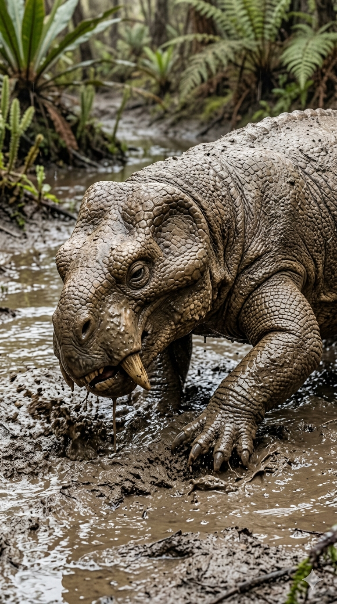
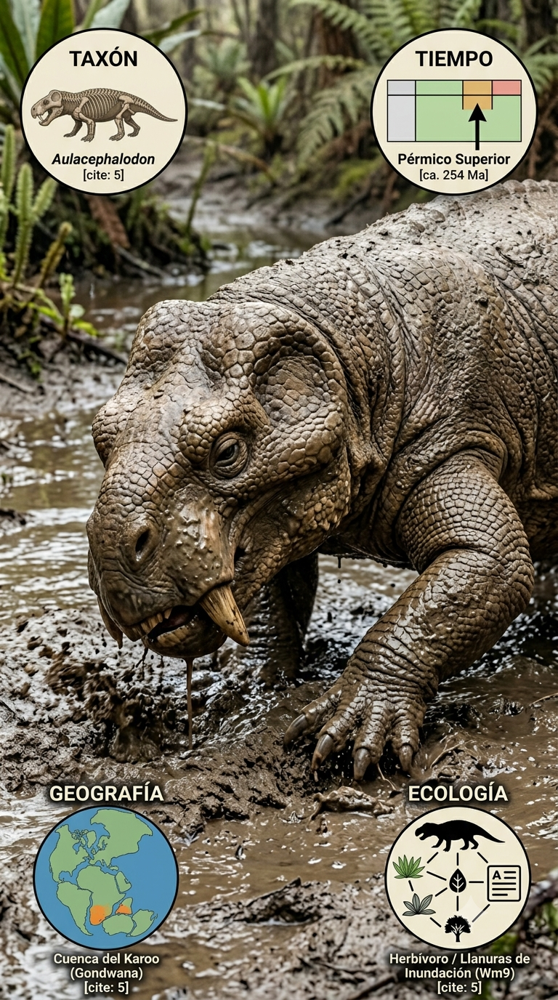
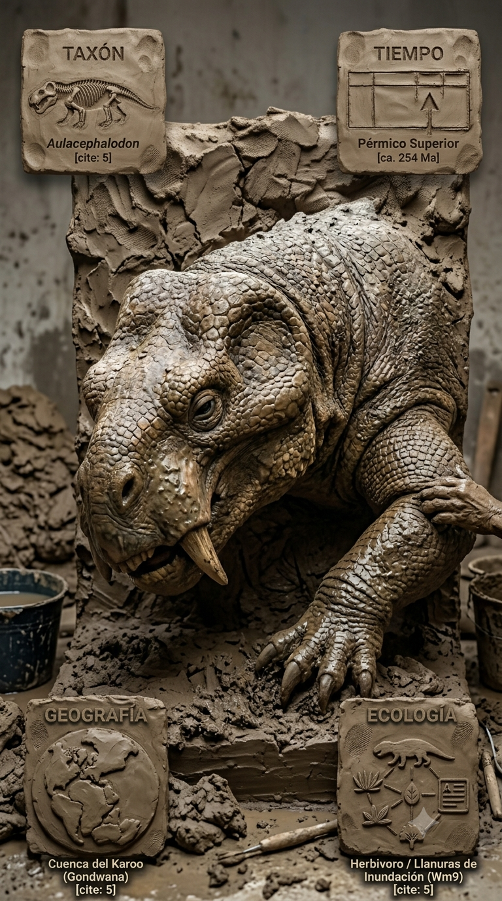
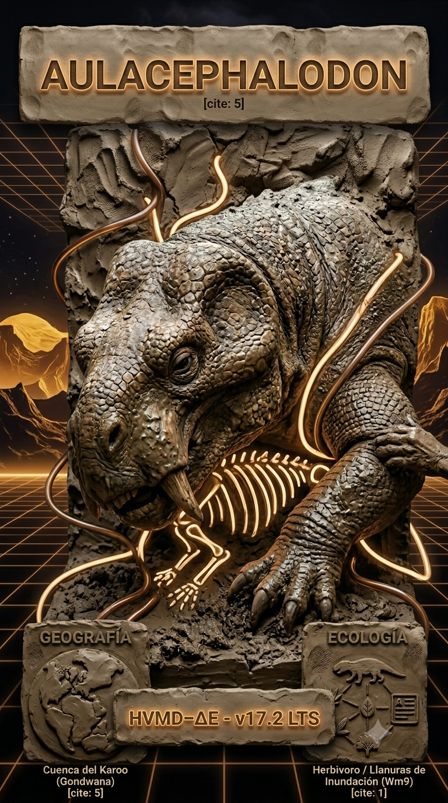

Paleoficha de Aulacephalodon baini




Periodo: Pérmico Superior
Edad: Hace aproximadamente 254 millones de años.
Dieta: Herbívoro especializado.
Distribución: Cuenca del Karoo (Sudáfrica), Gondwana.
TAXÓN:
Aulacephalodon baini
CLADO: Dicynodontia (Therapsida)
DIETA: Herbívoro especializado (presencia de colmillos prominentes)
TAMAÑO: Mediano, robusto, hasta 1.2 metros de longitud
LOCOMOCIÓN: Cuadrúpedo de postura semi-erecta.
TIEMPO:
Pérmico Superior (Wuchiapingiense), aproximadamente 254 millones de años.
GEOGRAFÍA:
Cuenca del Karoo (Sudáfrica). Equivalencia paleogeográfica: Gondwana (región interior). Ambiente paleoecológico: llanura aluvial de baja energía y llanuras de inundación.
ECOLOGÍA:
Flora dominada por Glossopteris, con helechos y licófitos en zonas de ribera. Fauna asociada con Daptocephalus, Thrinaxodon y gorgonópsidos depredadores. Nicho ecológico como herbívoro de sotobosque y excavador de ribera. Competencia por recursos vegetales y presión constante de depredación.
CLIMA:
Wm2 (Semiárido). Marcada estacionalidad.
ESTADO ECOLÓGICO:
Estable. Población resiliente adaptada a un entorno de llanura aluvial estacionalmente seco.
Vídeo PalEntropía:
▶ Ver Short en YouTube